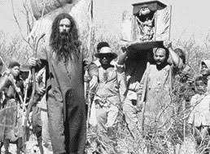
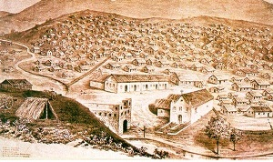

Introdução
A Guerra de Canudos (1896-1897) foi um dos maiores conflitos internos da história do Brasil.
O embate ocorreu no interior da Bahia, entre o Exército Brasileiro e os seguidores de Antônio Conselheiro,
líder religioso que fundou o povoado de Canudos. O confronto resultou em um massacre,
marcando a repressão violenta do governo contra movimentos populares.
A Formação de Canudos

Canudos surgiu no final do século XIX, em meio a um Brasil recém-saído da escravidão e ainda instável após
a Proclamação da República (1889). A economia do sertão nordestino era baseada na agropecuária, sofrendo com
secas, concentração fundiária e exploração dos trabalhadores rurais.
Nesse cenário, Antônio Conselheiro, um líder religioso carismático, começou a atrair seguidores com suas
pregações contra a miséria e a corrupção das autoridades. Defendia um retorno aos valores religiosos e criticava
a República, o que fez com que a elite política e econômica o enxergasse como uma ameaça. Em 1893, seus seguidores
se estabeleceram na fazenda abandonada de Canudos, formando uma comunidade autônoma que cresceu rapidamente,
chegando a cerca de 25 mil habitantes.

A comunidade de Canudos passou a incomodar grandes fazendeiros da região, que perdiam trabalhadores para a nova
sociedade, onde não havia exploração e a terra era compartilhada. Além disso, também incomodou a igreja, que via
Antônio Conselheiro como um herege, e as autoridades republicanas o enxergavam como um opositor perigoso,
acreditando que ele planejava restaurar a monarquia.
O Estopim e as Expedições Militares
O estopim do conflito foi a recusa dos moradores de Canudos em comprar madeira de comerciantes locais para construir
uma igreja, pois já haviam adquirido o material por conta própria. Esse desentendimento foi usado como pretexto para
acusá-los de se rebelar contra a República, levando o governo a intervir militarmente.

A guerra se desenrolou em quatro expedições militares:
- Primeira expedição (novembro de 1896): Pequena tropa enviada pelo governo foi derrotada pelos sertanejos.
- Segunda expedição (janeiro de 1897): Um contingente maior foi novamente derrotado pelos combatentes de Canudos.
- Terceira expedição (março de 1897): Com reforços, os soldados enfrentaram resistência feroz e recuaram.
- Quarta expedição (junho a outubro de 1897): O governo enviou milhares de soldados, cercando Canudos e bombardeando a cidade até sua destruição total.
No dia 5 de outubro de 1897, os últimos sobreviventes foram massacrados, incluindo mulheres e crianças.
Antônio Conselheiro morreu pouco antes da queda de Canudos, provavelmente por doença.
Consequências da Guerra
A destruição de Canudos simbolizou a força repressiva do governo republicano contra movimentos populares.
Entre 15 e 25 mil pessoas morreram no conflito, incluindo soldados e sertanejos. O massacre demonstrou a
violência do Estado contra os mais pobres e a intolerância diante de qualquer forma de organização que desafiasse
a ordem vigente.
Além disso, o episódio inspirou obras literárias e estudos históricos, sendo imortalizado no livro Os Sertões,
de Euclides da Cunha, que presenciou o conflito e descreveu a bravura dos sertanejos diante da brutalidade militar.